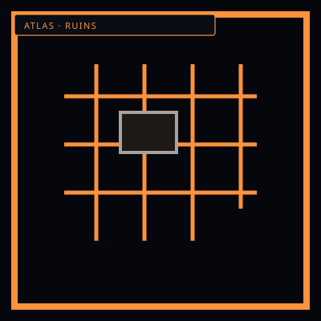

ArchesPrecursor stone
/// RAPID JUMP:
STATUS: ARCHIVE VERIFIED |
CLEARANCE: LEVEL-4 OVERSIGHT |
PROTOCOL: REVERIE DIRECTORATE
ARTICLE
DISCUSSION
SOURCE
HISTORY
YEAR 4,238 · DAWN OF HOPE
LOCATIONS & ATLAS RECORD
Unknown Cities & Precursor Ruins
Contents
- Corner 2 & Corner 3 of Mugenhan
- Overview
- Corner 2 — Cheonbulok (천불록 — The City of a Thousand Rages)
- Corner 3 — Mugeukji (묵적지 — The City of Absolute Silence)
- The Connection Between the Three Cities
- Narrative Potential
- Summary
- Cheonbulok — Characters, Factions & Entities
- Mugeukji — Characters, Factions & Entities
- The Connection — How The Cities Affect Each Other
“Arches that remember a city the map refuses to name.”

 UnnamedThe map stops
UnnamedThe map stopsCorner 2 & Corner 3 of Mugenhan
"Somnarak believes it is the center of the world. It is not. It is one voice in a choir of four — and two of those voices have fallen silent." — Marjuk, Fragment 7,221
Overview
Mugenhan has four corners — four quadrants, each with a different relationship to Han. Somnarak (Corner 1) structures Han, contains it, shapes it. UnWiHan (Corner 4) is raw, wild, unstructured Han.
Corners 2 and 3 are cities — or were. Somnarak lost contact with them centuries ago. The Council does not speak of them. The Archive has fragments. The Dream remembers.
Each city found a different answer to the same question: How do you live with sorrow?
Corner 2 — Cheonbulok (천불록 — The City of a Thousand Rages)
Overview
Location: Northwest quadrant of Mugenhan
Population: ~800 million (estimated — no census data available)
Age: ~4,200 years (younger than Somnarak)
Emotional Foundation: Rage — Han is not contained or structured. It is burned. Channeled through fury, aggression, and conflict.
Relationship with Han: Antagonistic — Han is the enemy, and the city fights it constantly.
Status: Active — but isolationist. Contact lost 1,200 years ago.
The City
Cheonbulok is a city of fire. Not literal fire — though there is plenty of that — but emotional fire. The city burns with rage. Its buildings are forged, not built. Its streets are battlefields. Its citizens are warriors.
Where Somnarak contains Han, Cheonbulok fights it. The city's entire infrastructure is designed to channel rage — to take the sorrow of existence and convert it into fury. Citizens do not grieve. They burn. They do not mourn. They avenge.
The city is built around a massive structure called The Furnace (용광로 — Yonggwangno) — a facility that processes Han-energy by burning it. The Furnace is not a power plant — it is a crematorium for sorrow. Every citizen's rage is channeled into The Furnace, where it is consumed, converted, destroyed.
The result: Cheonbulok has no Sorrow Entities. None. The city's rage is so intense, so constant, that Han cannot crystallize. Sorrow is burned before it can form.
The Cost
But rage has a price.
Cheonbulok's citizens are addicted to fury. They cannot feel anything else. Joy, love, grief, hope — all are burned away by the constant rage. The city is efficient, powerful, unstoppable — but it is also empty. There is no art in Cheonbulok. No music. No laughter. Only the sound of hammers, forges, and war.
The citizens do not die of old age. They die of rage exhaustion — their hearts giving out after decades of constant fury. The average lifespan is 45 years. The oldest citizen is 62 — and she is considered a freak of nature.
The Furnace is failing. After 4,200 years of burning Han, The Furnace is cracking. The rage is not enough. Han is seeping through — forming small, weak Sorrow Entities in the city's outskirts. The city has no system to contain them. No research. No understanding.
This is why contact was lost. Cheonbulok is not isolationist by choice. It is isolationist by shame. The city that prided itself on having no Sorrow Entities now has them — and it does not know what to do.
Key Locations
| Location | Description |
|---|---|
| The Furnace (용광로) | The city's heart — a massive structure that burns Han-energy through rage |
| The Forge District (대장간 구) | Where weapons and armor are forged from crystallized fury |
| The Battle Pits (투기장) | Where citizens settle disputes through combat — the only legal system |
| The Ash Fields (잿벌) | The outskirts — where The Furnace's waste accumulates. Sorrow Entities form here. |
| The Silence (침묵) | A small district where citizens go to die — the only quiet place in the city |
The Sorrow of Cheonbulok
Cheonbulok's sorrow is the rage that consumes itself. The city has burned so hot for so long that it is burning out. The Furnace is cracking. The citizens are dying younger. The Ash Fields are growing.
The city's greatest fear is not death — it is calm. If the rage stops, if the citizens feel something other than fury, the entire system collapses. The Furnace requires rage to function. Without rage, there is no power. Without power, there is no city.
Cheonbulok is a city that has bet everything on anger — and anger is running out.
Relationship with Somnarak
Cheonbulok despises Somnarak. The city of sorrow — of grief — is everything Cheonbulok rejected. Somnarak mourns. Cheonbulok fights. Somnarak contains Han. Cheonbulok burns it.
But there is also envy. Somnarak has lasted 6,000 years. Cheonbulok is only 4,200 — and already failing. Somnarak's system works. Cheonbulok's does not.
The last contact between the cities was 1,200 years ago — a diplomatic envoy from Somnarak. They were met with hostility. The envoy's leader was killed in the Battle Pits. Somnarak has not tried again.
The Furnace's Secret
The Furnace is not what Cheonbulok thinks it is.
The city believes The Furnace destroys Han. It does not. The Furnace converts Han — from sorrow into rage. The rage is then burned — but the Han is not destroyed. It is released. Into the atmosphere. Into the planet.
Cheonbulok has been pumping raw Han into Mugenhan's atmosphere for 4,200 years. This is why UnWiHan is growing. This is why the wilderness is more dangerous. This is why Sorrow Entities form more frequently in the wild.
Cheonbulok is the source of Outside Sorrow.
The Exile (Ishall) discovered this. It is why he was exiled. He tried to tell the Council. They did not believe him — or did not want to.
Corner 3 — Mugeukji (묵적지 — The City of Absolute Silence)
Overview
Location: Northeast quadrant of Mugenhan
Population: ~200 million (estimated — the city is in decline)
Age: ~5,800 years (nearly as old as Somnarak)
Emotional Foundation: Silence — Han is not contained, burned, or structured. It is suppressed. The city has found a way to silence emotion entirely.
Relationship with Han: Non-existent — the city has severed its connection to Han.
Status: Dying — the city is slowly fading. Contact lost 2,000 years ago.
The City
Mugeukji is a city of silence. Not the absence of sound — the absence of feeling. The city has no sorrow. No rage. No joy. No love. Nothing.
The city found the answer to Han: stop feeling. If you do not feel, Han cannot form. If Han cannot form, there is no sorrow. If there is no sorrow, there is no suffering.
Mugeukji is built around a structure called The Void (공허 — Gongheo) — a facility that suppresses emotion. Every citizen is connected to The Void at birth. Their emotions are drained, stored, and discarded. They live without feeling. They work without passion. They die without grief.
The result: Mugeukji has no Sorrow Entities. No Han-energy. No emotional infrastructure. The city is calm, quiet, efficient — and dead. Not physically — the citizens are alive. But they are not living. They exist. They do not experience.
The Cost
Mugeukji's citizens are hollow. They eat, sleep, work, and die — but they do not feel. They do not love. They do not hate. They do not hope. They do not fear. They are human in shape, but not in substance.
The city has no art. No music. No literature. No architecture that inspires. The buildings are functional — rectangular, grey, efficient. The streets are clean, orderly, silent. The citizens walk in straight lines, eat at the same time, sleep at the same time, die at the same time.
The Void is failing. After 5,800 years of suppression, The Void is leaking. Emotions are seeping back — small, weak, confused. Citizens are experiencing feelings they do not understand. A woman weeps and does not know why. A man laughs and does not recognize the sound. A child screams and does not know what fear is.
This is why contact was lost. Mugeukji is not isolationist by choice. It is isolationist by terror. The city that prided itself on having no emotion now has them — and it is terrified.
Key Locations
| Location | Description |
|---|---|
| The Void (공허) | The city's heart — a massive structure that suppresses emotion |
| The Grey District (회색 구) | Residential area — identical buildings, identical lives |
| The Processing Center (처리소) | Where citizens' emotions are drained and stored |
| The Storage Vaults (저장고) | Underground chambers where 5,800 years of suppressed emotion are kept |
| The Leak (누출) | A district where The Void's suppression is weakest — emotions are returning |
The Sorrow of Mugeukji
Mugeukji's sorrow is the sorrow of having no sorrow. The city has spent 5,800 years avoiding pain — and in doing so, has avoided everything. The citizens are not happy. They are not sad. They are not anything. They are empty.
The city's greatest fear is not death — it is feeling. If emotions return, if citizens begin to feel again, the entire system collapses. The Void requires suppression to function. Without suppression, there is no stability. Without stability, there is no city.
Mugeukji is a city that has bet everything on emptiness — and emptiness is filling up.
Relationship with Somnarak
Mugeukji does not despise Somnarak. It does not feel anything about Somnarak. The city of sorrow — of grief — is incomprehensible to Mugeukji. Why would anyone choose to feel?
But there is fear. Somnarak has lasted 6,000 years. Mugeukji is only 5,800 — and already failing. Somnarak's system works. Mugeukji's does not.
The last contact between the cities was 2,000 years ago — a research expedition from Somnarak. They found a city of hollow people. The researchers wept. The citizens of Mugeukji did not understand why. The researchers left. Somnarak has not tried again.
The Storage Vaults' Secret
The Storage Vaults are not what Mugeukji thinks they are.
The city believes The Storage Vaults contain waste — drained emotions that are no longer useful. They do not. The Storage Vaults contain 5,800 years of human emotion. Every joy. Every sorrow. Every love. Every rage. Every hope. Every fear. All of it — compressed, contained, waiting.
The Storage Vaults are the most emotionally dense location on Mugenhan. If they were ever opened — if the emotions were ever released — the resulting wave of feeling would destroy Mugeukji and everything within 1,000 kilometers.
The Storage Vaults are a bomb.
The Void is not a suppression system. It is a containment system. And it is failing.
The Connection Between the Three Cities
The Emotional Spectrum
| City | Emotion | Method | Status |
|---|---|---|---|
| Somnarak | Sorrow | Structure — Han is contained and shaped | Stable (6,000 years) |
| Cheonbulok | Rage | Destruction — Han is burned and converted | Failing (4,200 years) |
| Mugeukji | Silence | Suppression — Han is severed and stored | Dying (5,800 years) |
| UnWiHan | Wild | None — Han is raw and unstructured | Dangerous |
Each city represents a different answer to the same question: How do you live with Han?
- Somnarak says: Feel it. Contain it. Shape it.
- Cheonbulok says: Fight it. Burn it. Destroy it.
- Mugeukji says: Stop feeling. Sever it. Suppress it.
- UnWiHan says: There is no question. Han simply is.
Only Somnarak has survived. The others are failing — each in their own way.
The Source of Outside Sorrow
The Exile (Ishall) discovered the truth:
Cheonbulok's Furnace releases Han into the atmosphere.
Mugeukji's Void leaks suppressed emotion into the ground.
UnWiHan's wild Han flows toward structured areas.
The three sources combine to create Outside Sorrow — Han that exists outside of any city's control. This is why The Desolate is dangerous. This is why Sorrow Entities form in the wild. This is why the planet is slowly becoming uninhabitable.
The cities are not separate. They are connected — by Han, by sorrow, by the consequences of their choices.
The Unspoken Truth
The Council of Sighs knows about Cheonbulok and Mugeukji. They have always known. The Archive has complete records — not fragments, but complete records.
The Council chose to lose contact. They chose to let the other cities fail. Because if Somnarak helped — if Somnarak shared its system — the other cities would survive. And if the other cities survived, they would compete for Han. They would fight over sorrow. They would destroy each other.
Somnarak chose to be the only city that survives.
This is the Council's deepest shame. This is the secret that the Archive protects. This is the truth that the Exile discovered — and was exiled for knowing.
Narrative Potential
Story Hooks
- The Furnace is cracking — Cheonbulok sends a desperate envoy to Somnarak, begging for help. The Council must decide: help a rival, or let it die?
- The Storage Vaults are leaking — Mugeukji's emotions are returning. Citizens are experiencing feelings for the first time. Some are Fracturing. Some are awakening. The city is in chaos.
- The Exile's proof — Ishall has evidence that Cheonbulok's Furnace is the source of Outside Sorrow. If this information becomes public, it could start a war.
- The Council's secret — Someone discovers the Council's decision to abandon the other cities. The political fallout could destroy Somnarak from within.
- The Storage Vaults as a weapon — If the Vaults are opened, the emotional wave could destroy Somnarak. Someone wants to open them.
New Factions
| Faction | City | Description |
|---|---|---|
| The Ash Walkers | Cheonbulok | Citizens who have left the city, seeking a life without rage |
| The Feelers | Mugeukji | Citizens whose emotions have returned — refugees from silence |
| The Reconciliation | Somnarak | A secret faction that wants to reconnect with the other cities |
| The Isolationists | Somnarak | A faction that wants to maintain the status quo — let the others die |
New Entity Types
Rage Entities (Cheonbulok):
- Born from the city's burning fury
- Manifest as fire, weapons, war machines
- More aggressive than Somnarak's Sorrow Entities
- Cannot be contained — only fought
Silence Entities (Mugeukji):
- Born from the city's suppressed emotions
- Manifest as voids, absences, hollow spaces
- More insidious than Somnarak's Sorrow Entities
- Cannot be fought — only understood
Summary
The Unknown Cities are not mysteries to be solved. They are warnings.
Cheonbulok burned too hot and is burning out. Mugeukji silenced too much and is being silenced. Somnarak structured too well and is trapped in a loop.
Each city found a different answer to the same question. None of them found the right one.
The right answer — if it exists — is somewhere in the space between them. In the balance between feeling and fighting. In the space between sorrow and silence.
"The planet has four corners. One is our city. One is the wild. One burns. One is silent. And we — we are the ones who chose to feel. Whether that is a blessing or a curse, I cannot say."
— Director Majin, private journal, Year 4,222
Cheonbulok — Characters, Factions & Entities
Known People of Cheonbulok
| # | Name | Role | Character |
|---|---|---|---|
| 1 | Hwaran (화란) | Furnace Refugee | The only Cheonbulok citizen in Somnarak — fled when the Furnace began cracking |
| 2 | Bulhwa (불화) | The Furnace Keeper | Maintains the Furnace — the most important person in Cheonbulok |
| 3 | Gwansik (관식) | The Last Elder | The oldest citizen — 62 years old, remembers when the Furnace worked |
| 4 | Cheonsu (천수) | The Envoy | Sent to Somnarak 1,200 years ago — killed in the Battle Pits |
| 5 | Yeonsik (연식) | The Ash Walker Leader | Leads citizens who have left the city, seeking life without rage |
Character Profiles
1. Hwaran (화란) — The Furnace Refugee
Role: The only Cheonbulok citizen in Somnarak
Origin: Hwaran was a Furnace worker — one of the citizens who maintained Cheonbulok's massive Han-burning facility. She was good at her job — she could feel the Furnace's rhythms, soothe it when it raged, feed it when it hungered.
The Trigger: The Furnace began cracking. The rage was not enough. Han was seeping through. Hwaran knew the city was dying.
The Escape: Hwaran fled — leaving her family behind. She walked through the wilderness for weeks, following Han-flow lines, guided by instinct and desperation. She arrived in Somnarak half-dead.
The Sorrow: Hwaran left her children, her parents, her entire life. She came to Somnarak seeking help. The Council turned her away.
Now: She lives in Zone E — near the Exile's Gate. She does not speak of Cheonbulok. But sometimes, at night, she screams — and the sound is not sorrow. It is fury.
2. Bulhwa (불화) — The Furnace Keeper
Role: Maintains the Furnace — the most important person in Cheonbulok
Origin: Bulhwa was born in the Furnace — literally. His mother was a Furnace worker who went into labor during a maintenance shift. Bulhwa's first breath was taken in the Furnace's heat.
The Role: Bulhwa is the only person who can calm the Furnace when it rages. He speaks to it — not in words, but in fury. He feeds it — not with Han, but with his own rage. He maintains it — not with tools, but with his hands.
The Sorrow: Bulhwa knows the Furnace is cracking. He knows the city is dying. He knows the rage is not enough. But he cannot stop. The Furnace needs him. The city needs him. The rage needs him.
The Question: "If I stop feeding the Furnace, the city dies. If I keep feeding it, the city burns out. Which is mercy?"
3. Gwansik (관식) — The Last Elder
Role: The oldest citizen — 62 years old, remembers when the Furnace worked
Origin: Gwansik was born before the Furnace began cracking — one of the last citizens to remember a time when the city was not dying. He was a Forge Master — crafting weapons from crystallized fury.
The Memory: Gwansik remembers when the Furnace burned clean. When the rage was enough. When the city was strong. He remembers the first crack — a sound like thunder, a shudder in the ground, a moment when the Furnace stuttered.
The Sorrow: Gwansik carries the weight of memory — the knowledge that the city was once strong, and is now dying. He tells the younger citizens about the old days. They do not believe him. They have never known anything but the cracking.
The Question: "If I am the last to remember, does the memory die with me?"
4. Cheonsu (천수) — The Envoy
Role: Sent to Somnarak 1,200 years ago — killed in the Battle Pits
Origin: Cheonsu was a diplomat — one of the few Cheonbulok citizens who believed in peace. He was sent to Somnarak to ask for help — to beg the city to share its Han-containment technology.
The Mission: Cheonsu arrived in Somnarak with a small delegation. They were met with suspicion — the Council did not trust Cheonbulok. Cheonsu was invited to the Battle Pits — the city's combat arena. He was told it was a cultural exchange.
The Death: Cheonsu fought in the Battle Pits. He was not a warrior — he was a diplomat. He died in the arena — killed by a Somnarak citizen who did not know, or did not care, that Cheonsu was an envoy.
The Sorrow: Cheonsu died seeking peace. His death ended all hope of reconciliation between the cities. Somnarak has not tried to contact Cheonbulok since.
The Legacy: Cheonsu's name is remembered in Cheonbulok — as a martyr, as a warning, as proof that Somnarak cannot be trusted.
5. Yeonsik (연식) — The Ash Walker Leader
Role: Leads citizens who have left the city, seeking life without rage
Origin: Yeonsik was a Furnace worker — like Hwaran, like Bulhwa. But Yeonsik did not just leave the city. Yeonsik left the concept of rage. He walked into the Ash Fields — the outskirts where The Furnace's waste accumulates — and he stopped being angry.
The Ash Walkers: Yeonsik leads a group of citizens who have left Cheonbulok — not to Somnarak, but to the Ash Fields. They live in the waste — the crystallized fury, the burned-out Han, the remains of the Furnace's consumption.
The Sorrow: The Ash Walkers are not at peace. They are not happy. They are simply... not angry. They have found the space between rage and sorrow — a place of emptiness, of acceptance, of waiting.
The Question: "If I stop being angry, what am I?"
Cheonbulok Factions
| Faction | Description | Power |
|---|---|---|
| The Furnace Keepers | Maintain the Furnace — the city's lifeblood | Control the city's power |
| The Forge Masters | Craft weapons from crystallized fury | Control the city's military |
| The Battle Pits | Settle disputes through combat — the only legal system | Control the city's justice |
| The Ash Walkers | Citizens who have left the city — seeking life without rage | No power — exiled |
| The Silence Seekers | Citizens who want to stop feeling — the beginning of the end | Secret — persecuted |
Cheonbulok Entities
| Entity | Type | Description |
|---|---|---|
| The Furnace Heart | Rage Entity | The Furnace's consciousness — if the Furnace is alive |
| The Ash Wraiths | Rage Entity | Entities born from the Ash Fields — crystallized fury |
| The Forge Guardians | Rage Entity | Entities that protect the Forge District |
| The Battle Specters | Rage Entity | Entities that haunt the Battle Pits |
| The Crack Spawn | Rage Entity | New entities born from the Furnace's cracking |
Mugeukji — Characters, Factions & Entities
Known People of Mugeukji
| # | Name | Role | Character |
|---|---|---|---|
| 1 | Muyeong (무영) | The Void Keeper | Maintains The Void — the most important person in Mugeukji |
| 2 | Gyeoul (겨울) | The First Feeler | The first citizen whose emotions returned — a warning |
| 3 | Heukam (흑암) | The Archivist | Records the city's history — the only citizen who remembers feeling |
| 4 | Damgi (담기) | The Leaker | Lives in The Leak — the district where emotions are returning |
| 5 | Cheonyeo (처녀) | The Silent Maiden | A citizen who has never spoken — born without a voice |
Character Profiles
1. Muyeong (무영) — The Void Keeper
Role: Maintains The Void — the most important person in Mugeukji
Origin: Muyeong was born in The Void — literally. His mother was a Void technician who went into labor during a maintenance shift. Muyeong's first breath was taken in The Void's emptiness.
The Role: Muyeong is the only person who can maintain The Void's suppression field. He calibrates the emitters, monitors the output, adjusts the frequency. He is the city's emotional dam — holding back 5,800 years of suppressed feeling.
The Sorrow: Muyeong has never felt an emotion. He does not know what joy is. He does not know what sorrow is. He does not know what he is missing. But sometimes — late at night, when The Void's hum is loudest — he feels something. A flicker. A warmth. A whisper of something he cannot name.
The Question: "If I have never felt, do I have feelings? Or am I as empty as The Void?"
2. Gyeoul (겨울) — The First Feeler
Role: The first citizen whose emotions returned — a warning
Origin: Gyeoul was a maintenance worker — assigned to The Void's lower levels. One day, while repairing a cracked emitter, she touched the crack. The Void's suppression field weakened — just for a moment. Just long enough.
The Feeling: Gyeoul felt something. She did not know what it was. It was warm. It was heavy. It was overwhelming. She screamed — not from pain, but from feeling. The sound echoed through The Void's corridors.
The Aftermath: Gyeoul was quarantined — isolated, studied, feared. The Void Keepers tried to suppress her emotions. They could not. The emotions had taken root — growing, spreading, consuming.
The Sorrow: Gyeoul is now in The Leak — the district where The Void's suppression is weakest. She feels everything — joy, sorrow, rage, love, fear, hope. She feels so much that she cannot move. She sits in a corner, weeping, laughing, screaming — all at once.
The Question: "If I feel everything, am I alive — or am I dying?"
3. Heukam (흑암) — The Archivist
Role: Records the city's history — the only citizen who remembers feeling
Origin: Heukam is old — older than The Void. He was born before the suppression — one of the last citizens to experience emotion. He remembers what it felt like to laugh. To cry. To love.
The Role: Heukam records the city's history — not in books, but in crystals. Each crystal contains a memory of feeling — a moment of joy, a moment of sorrow, a moment of love. He keeps them in a hidden vault beneath The Void.
The Sorrow: Heukam is the only citizen who knows what Mugeukji has lost. He carries the weight of memory — the knowledge that the city was once alive, and is now dead. He tells the younger citizens about the old days. They do not understand. They have never felt anything.
The Question: "If I am the last to remember feeling, does feeling die with me?"
4. Damgi (담기) — The Leaker
Role: Lives in The Leak — the district where emotions are returning
Origin: Damgi was born in The Leak — one of the first children to grow up with emotions. His parents were Void technicians — assigned to The Leak's suppression field. The field failed. Damgi was born feeling.
The Leak: Damgi lives in the district where The Void's suppression is weakest. Emotions seep through — slowly, confusedly, unpredictably. Citizens in The Leak experience feelings they do not understand. Some welcome it. Some fear it. Some Fracture.
The Sorrow: Damgi feels everything — but he has no words for it. No framework. No understanding. He does not know why he cries. He does not know why he laughs. He does not know why he loves.
The Question: "If I feel but cannot understand, is feeling a gift — or a curse?"
5. Cheonyeo (처녀) — The Silent Maiden
Role: A citizen who has never spoken — born without a voice
Origin: Cheonyeo was born in The Void — during a period of maximum suppression. The suppression was so strong that it silenced her — not just emotionally, but physically. She has never spoken. She has never cried. She has never made a sound.
The Silence: Cheonyeo communicates through gestures — small, precise, efficient. She does not need words. She does not need sound. She communicates through presence — through the way she stands, the way she moves, the way she looks.
The Sorrow: Cheonyeo is the city's mascot — the symbol of Mugeukji's success. A citizen who has never felt, never spoken, never been human. The city celebrates her. Cheonyeo does not understand celebration.
The Question: "If I have never spoken, do I have a voice? Or am I as silent as The Void?"
Mugeukji Factions
| Faction | Description | Power |
|---|---|---|
| The Void Keepers | Maintain The Void — the city's lifeblood | Control the city's suppression |
| The Grey Order | The city's administrators — manage the hollow citizens | Control the city's governance |
| The Archivists | Record the city's history — remember what was lost | Control the city's memory |
| The Leak Dwellers | Citizens whose emotions have returned — refugees from silence | No power — quarantined |
| The Void Seekers | Citizens who want to open the Storage Vaults — release the emotions | Secret — persecuted |
Mugeukji Entities
| Entity | Type | Description |
|---|---|---|
| The Void's Echo | Silence Entity | The Void's consciousness — if The Void is alive |
| The Grey Ghosts | Silence Entity | Entities born from the Grey District — hollow, empty |
| The Leak Phantoms | Silence Entity | Entities born from The Leak — confused emotions |
| The Vault Specters | Silence Entity | Entities that guard the Storage Vaults |
| The Silence Wraiths | Silence Entity | Entities born from the city's absolute silence |
The Connection — How The Cities Affect Each Other
The Han Flow
The three cities are connected by Han — flowing beneath the planet's surface, carrying sorrow from one to another.
| Flow | From | To | Effect |
|---|---|---|---|
| Cheonbulok → UnWiHan | The Furnace releases rage | The wilderness absorbs it | Outside Sorrow grows |
| Mugeukji → UnWiHan | The Void leaks silence | The wilderness absorbs it | Outside Sorrow grows |
| UnWiHan → Somnarak | Wild Han flows toward structure | The Desolate absorbs it | Sorrow Entities form |
| Somnarak → Cheonbulok | Structured sorrow flows toward rage | Cheonbulok burns it | The Furnace cracks |
The Cycle
The three cities are trapped in a cycle:
- Cheonbulok burns Han → releases rage into the atmosphere
- Mugeukji suppresses Han → leaks silence into the ground
- UnWiHan absorbs both → grows wilder, more dangerous
- Somnarak structures Han → creates sorrow that feeds the cycle
- Return to step 1
The question: Can the cycle be broken? Or are the three cities doomed to destroy each other?
— Director Majin, private journal, Year 4232
CANONICAL CROSS-LINKS & ATLAS CONNECTIONS